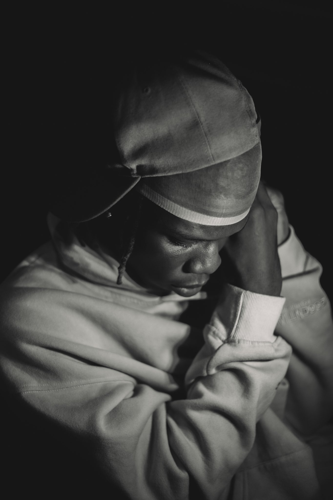
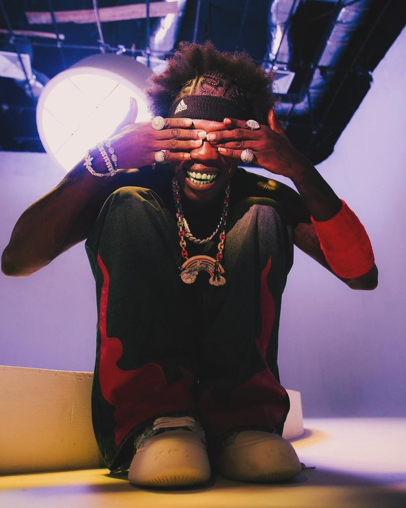

Balogun Afolabi Oluwaloseyi (born 12 July 2000), known professionally as Seyi Vibez,is a Nigerian singer and
songwriter. He is known for his breakthrough single "Chance (Na Ham)" from his second studio album Billion
Dollar Baby which debuted at No. 19 on the UK Afrobeats singles chart and peaked number 7 on the TurnTable
Top
100 chart.
Early life career
Balogun Afolabi Oluwaloseyi was born on 12 July 2000 in Ketu, Lagos State, where he spent his early life
before moving to Ikorodu, Lagos State, where he grew up. Seyi Vibez debuted in 2019 with his single
"Anybody". He first gained popularity in 2020 following the release of his single "Godsent",[6] following
year he released his debut studio album No Seyi No Vibez (NSNV),[7] his second studio album Billion Dollar
Baby with the Mixtape "Billion Dollar Baby 2.0" was released in 2022,[8][9] The album peaked number 1 on the
Turntable 50 albums chart.[10] The same year he was cited as one of the 16 African artists to watch by
MoreBranches . On 6 January 2023, Seyi Vibez released his 5 tracked debut Extended play, "Memory
Card",[12][13][14][15][16] with guest feature from American rapper YXNG K.A. In the first week of launching
the EP, it garnered over 6.30 million streams with four tracks from the Ep dominating the Turntable Top 10
chart and was listed by Pan African Music as one of the 10 best albums of January 2023.
In August 2023, Seyi Vibez was announced as the brand ambassador of Cardtonic, one the leading gift card exchange platform in Nigeria and Ghana In September 2023, At the 16th Headies Award, Seyi Vibez won the Best Street-Hop Artiste with his "Chance (Na Ham)". On 26 January 2024, Seyi Vibez said that the advice that Burna Boy gave him that always stayed with him is don't complain, just believe, show any sign of weakness, and keep moving. “He always told me that: 'Show no sign of weakness, bro. Keep moving.' Yeah, that's it. In April 2024, Seyi Vibez released another song Instagram featuring a youngster, Muyeez. The song eventually went top of the Charts in Apple Music Nigeria less than 24 hours and some platforms after it was released. On May 16, 2024, Seyi Vibez score a nod as a contender for BET awards Viewer’s Choice: Best New International Act 2024.
Seyi Vibez found himself embroiled in a feud with fellow Nigerian artist Zinoleesky . The conflict between the two singers escalated when they took to social media to exchange words and air their grievances. The feud started with Zinoleesky advising Seyi Vibez to revert to his previous musical style and also suggesting improvements for his studio. Seyi Vibez, in response, urged Zinoleesky to refrain from speaking until he could afford a new house, alluding to Zinoleesky's recent purchase of a new property.[citation needed] The public dispute between Zinoleesky and Seyi Vibez has attracted significant attention within the music industry and among their respective fan bases. Many fans and followers have expressed their opinions and speculated on the possible motivations behind the feud. The ongoing conflict between the two artists has sparked curiosity about the future dynamics of their relationship and the impact it may have on their music careers
Seyi Vibez has a running beef with fellow Nigerian artist Portable which is yet to be resolved since their fame. In an interview, portable revealed that he invited Seyi Vibez to his show but he got snubbed despite performing at Seyi Vibez show for free. Overzealous fans of Seyi Vibez reportedly attacked Portable somewhere in Lagos state known as Iyesi
This page was last edited on 20 April 2025, at 14:27 (UTC).
Text is available under the Creative Commons Attribution-ShareAlike 4.0 License; additional terms may apply. By using this site, you agree to the Terms of Use and Privacy Policy. Wikipedia® is a registered trademark of the Wikimedia Foundation, Inc., a non-profit organization.
Privacy policy About Wikipedia Disclaimers Contact Wikipedia Code of Conduct Developers Statistics Cookie statement Mobile view